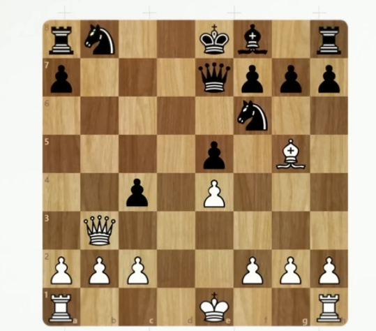
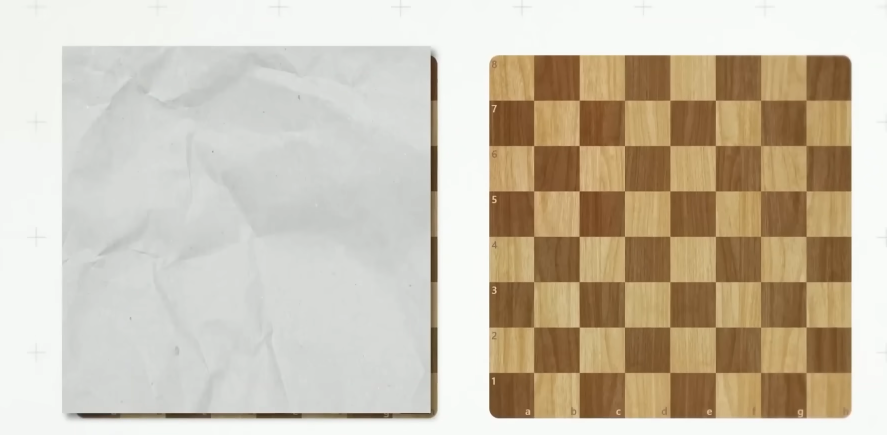
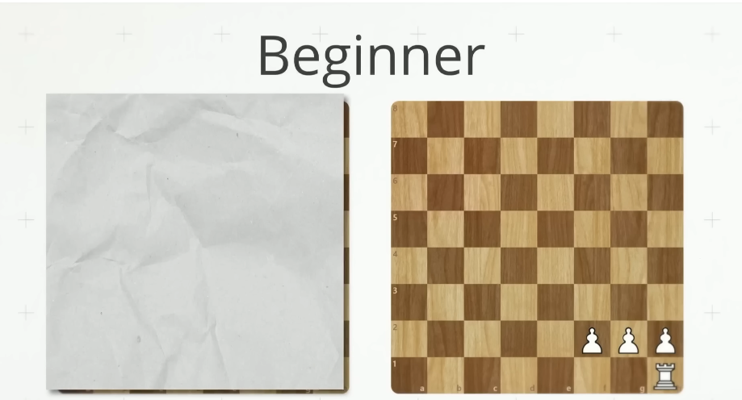
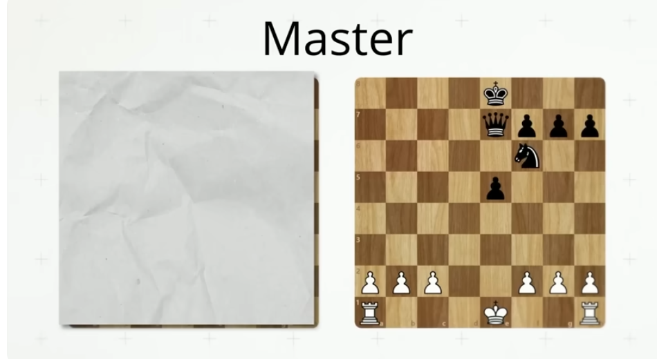
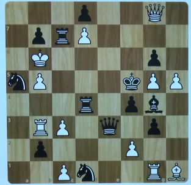
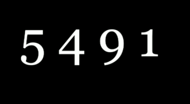
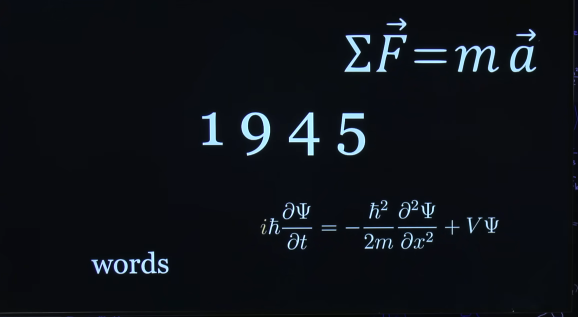

מה באמת עוצר ילדים מלהבין מתמטיקה — ואיך פותרים את זה?
מסע קצר לתוך הראש והלב של תלמידי המתמטיקה שלכם.
הרצאה–סדנה למורות ולמורי יסודי • עמירם אריכא
שקף 1
חיצים במקלדת או קליק ימין/שמאל על המסך
כלים מעשיים. מבוססי הבנה. בלי גימיקים.
נישאר עם מה שעובד לילדים בכיתה, לא רק בספרי מחקר.
שקף 2
▶ לשקף הבא
כמה מילים עלי
מהנס תוכנה
40 שנה מלמד מתמטיקה באופן פרטי
יזם הייטק חינוכי - 12trix
מפתח ופדגוג של סביבת לימוד עצמי בחשבון לילדים
40 שנה מלמד מתמטיקה באופן פרטי
יזם הייטק חינוכי - 12trix
מפתח ופדגוג של סביבת לימוד עצמי בחשבון לילדים
שקף 1
חיצים במקלדת או קליק ימין/שמאל על המסך
בואו נעשה ניסוי קצר.
לכמה רגעים תהיו אתם במקומם של התלמידים בכיתה.
שקף 3
▶ לשקף הבא
🙂
אל דאגה — אין ציונים.
אנחנו בודקים חוויה של חשיבה, לא מי "חזק" ומי "חלש".
שקף 4
▶ לשקף הבא
תרגיל 1
33 × 16 ÷ 8 = ?
תרגיל 2
21 + 27 + 27 + 27 + 27 + 27 − 25 − 25 − 25 − 25 − 25 = ?
תנסו לפתור כמה שיותר מהר.
שקף 5
אחרי שסיימו ▶ לשקף הבא
תרגיל 2
21 + 27 + 27 + 27 + 27 + 27 − 25 − 25 − 25 − 25 − 25 = ?
שוב – כמה שיותר מהר.
שקף 6
▶ כשכולם מוכנים
מה שקרה עכשיו לא קשור ל"חכמה" — רק למיומנות.
בואו נראה מה המדע אומר על זה.
שקף 7
▶ לשקף הבא
ניסוי: איך מומחי שחמט רואים לוח.

הראו למאסטרים לוח באמצע משחק לחמש שניות, ואז ביקשו לשחזר את המצב.
שקף 8
▶ לשקף הבא
אותו הלוח – גם לשחקנים מתחילים.

גם המתחילים מקבלים בדיוק את אותן חמש שניות הצצה.
שקף 9
▶ לשקף הבא
כמה כלים המתחילים הצליחו לשחזר?

בממוצע – בערך ארבעה כלים במקום הנכון.
שקף 10
▶ לשקף הבא
וכמה כלים המאסטרים הצליחו לשחזר?

בממוצע – סביב 16 כלים במקום הנכון.
שקף 11
▶ לשקף הבא
ואז חוקרי הניסוי ערבבו את הכלים על הלוח…

מה לדעתכם קרה?
שקף 12
▶ לשקף הבא
במצב אקראי – היתרון של המאסטרים כמעט נעלם
שקף 13
▶ לשקף הבא
מה מאפשר למאסטרים לזכור כל כך הרבה?

הם לא זוכרים כלי־כלי — הם רואים קבוצות.
שקף 14
▶ לשקף הבא
מומחיות = שימוש ב–Chunking.

אנחנו אוספים פרטים ליחידות משמעות (Chunks) שקל למוח להחזיק.
שקף 15
▶ לשקף הבא
גם במתמטיקה זה ככה: כשיש מיומנות, אנחנו רואים מיד
33 × 16 ÷ 8 = 66
21 + 27 + 27 + 27 + 27 + 27 − 25 − 25 − 25 − 25 − 25 = ?
21 + 27 - 25 + 27 - 25 + 27 - 25 + 27 - 25 + 27 - 25 = 31
21 + 27 - 25 + 27 - 25 + 27 - 25 + 27 - 25 + 27 - 25 = 31
שקף 16
אחרי שסיימו ▶ לשקף הבא
מי פתר בדרך הארוכה — ומי ראה את הקיצור?
אותו תרגיל. חוויה שונה.
זה לא עניין של "חכמה" — זה עניין של שליטה אריתמטית.
זה לא עניין של "חכמה" — זה עניין של שליטה אריתמטית.
שקף 17
▶ לשקף הבא
מה הרגשתם?
עומס. בלבול. עצירה. אולי אפילו "רק תגיד לנו את התשובה כבר".
חלקכם ראיתם את המבנה, חלקכם עשיתם את החישוב המלא.
כשאין מבנה — המוח נכנס לבלבול.
כשיש מבנה — המוח נרגע.
חלקכם ראיתם את המבנה, חלקכם עשיתם את החישוב המלא.
כשאין מבנה — המוח נכנס לבלבול.
כשיש מבנה — המוח נרגע.
שקף 18
▶ לשקף הבא
כשאין שליטה — אין הבנה.
המוח לא יכול “להבין” כשכל המשאבים שלו עסוקים בלהחזיק מספרים בראש.
שקף 19
▶ לשקף הבא
Arithmetic Flow
המעבר מחשיבה מאומצת לזרימה טבעית בחשבון.
כשאריתמטיקה זורמת — ההבנה המתמטית יכולה להיבנות.
שקף 20
▶ לשקף הבא
מוח עמוס לא יכול להבין.
עומס קוגניטיבי = יותר מדי משימות במקביל על אותו "מעבד".
שקף 21
▶ לשקף הבא
Intuitive / System 1
Analytical / System 2
Analytical / System 2
Daniel Kahneman
שקף 22
▶ לשקף הבא
כשהחישובים עוברים לאוטומט — העומס הקוגניטיבי יורד.
ואז נשאר מקום במוח לדבר החשוב באמת: להבין.
כשמערכת 1 חזקה, מערכת 2 פנויה להבין.
כשמערכת 1 חזקה, מערכת 2 פנויה להבין.
שקף 23
▶ לשקף הבא
פחד הוא תוצאה של עומס — לא של "חולשה".
כשהילד לא מבין מה קורה — המוח נכנס למגננה.
24
▶ לשקף הבא
כשמורידים לחץ — המבנה מתגלה.
5 + ? = 7
5 + x = 7 ⇒ x = ?
f(x) = 5 + x ⇒ f(?) = 7
5 + x = 7 ⇒ x = ?
f(x) = 5 + x ⇒ f(?) = 7
מתמטיקה אינה קשה — היא לפעמים מוצגת באופן שמעלה עומס.
שקף 25
▶ לשקף הבא
במצב הגנה — המוח הלומד פשוט "כבה".
כדי להדליק חשיבה — צריך קודם להחזיר ביטחון.
שקף 26
▶ לשקף הבא
ילדים לא מבינים כדי לפעול — הם פועלים כדי להבין.
ההבנה מגיעה מהעשייה, לא מההסבר.
שקף 27
▶ לשקף הבא
חשיבה דקלרטיבית מול חשיבה אופרטיבית

שקף 28
▶ לשקף הבא
ההסבר מגיע אחרי ההבנה — לא לפני
פחות "תסביר לי שוב" • יותר "תן לי לנסות שוב".
29
▶ לשקף הבא
הבנה לא מגיעה מבחוץ — היא נבנית מבפנים.
התפקיד שלנו הוא לעצב חוויה, לא רק להעביר מידע.
שקף 30
▶ לשקף הבא
איך נולדת הבנה?
פעולה → משוב → תיקון → אוטומציה → הבנה
בדיוק כמו לימוד שפה — לא מסבירים דקדוק לפני שמדברים.
בדיוק כמו לימוד שפה — לא מסבירים דקדוק לפני שמדברים.
שקף 31
▶ לשקף הבא
הבנה היא תהליך — לא רגע.
היא נבנית צעד-אחר-צעד, לא בשיעור אחד "קסום".
שקף 32
▶ לשקף הבא
כמו שריר שמתפתח בכל חזרה.
כך נבנית גם ההבנה המתמטית – חזרות חכמות, לא עוד הסברים.
שקף 33
▶ לשקף הבא
אתגרים לפי שכבת גיל

שקף 34
▶ לשקף הבא
בכיתות א׳–ג
האתגר הוא לא "להספיק את החומר" — אלא לאפשר לכל ילד 'להבשיל' בקצב שלו.
שקף 35
▶ לשקף הבא
בשלות קוגניטיבית ≠ גיל כרונולוגי.
אין גיל שבו כל הילדים בשלים לאותו נושא מתמטי.
ילדים שונים — מבשילים בזמנים שונים
ילדים שונים — מבשילים בזמנים שונים
שקף 36
▶ לשקף הבא
באיזה גיל ללמד בעיות מילוליות?
דנה קנתה עיפרון בשבעה שקלים ומחדד בשלושה שקלים.
כמה שקלים דנה שילמה?
שקף 37
▶ לשקף הבא
בכיתות ד׳–ו׳: הבעיה כבר לא קוגניטיבית — אלא רגשית.
שברים, אלגברה, חילוק ארוך — מגיעים על בסיס רעוע, עם הרבה פחד.
שקף 38
▶ לשקף הבא
מופשטות + חוסר שליטה + פחד = ניתוק מהמתמטיקה.
גם תלמידים חכמים "נופלים בין הכיסאות".
הם לא "חלשים" — הם מפוחדים.
שקף 39
▶ לשקף הבא
ביצועי התלמיד ← ציפיות המורה.
מחקר Rosenthal & Jacobson (1968)
שקף 40
▶ לשקף הבא
אמונה יוצרת מציאות.
האפקט חזק במיוחד אצל תלמידים חלשים – הם זקוקים לאמון של מישהו מבחוץ.
שקף 41
▶ לשקף הבא
כמה סיפורים אישיים
שקף 42
▶ לשקף הבא
שליטה • ביטחון רגשי • למידה דרך פעולה
כששלושת אלה מתקיימים – נוצרת סביבה שבה כל ילד יכול לצמוח במתמטיקה.
שקף 43
▶ לשקף הבא
שליטה אריתמטית → ביטחון רגשי → למידה פעילה
שקף 44
▶ לשקף הבא
בואו נראה יחד איך עושים את זה בכיתה שלכם.
בחלק הבא של המפגש נרד לרזולוציה של כלים, דוגמאות ותרגולים.
שקף 45
◀ חזרה אחורה או סיום